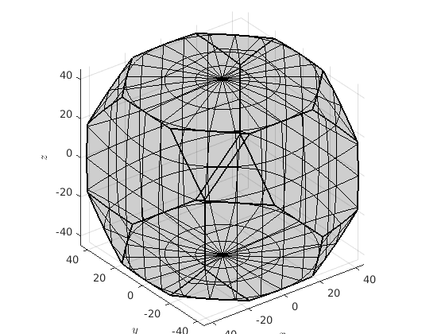
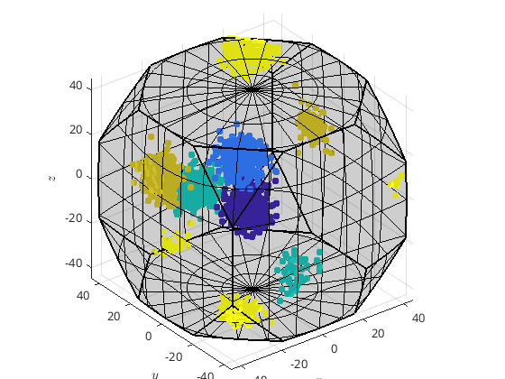

(method of orientation)
sort orientations into clusters
[c,center] = doHCluster(ori,'numCluster',n) [c,center] = doHCluster(ori,'maxAngle',omega)
| ori | |
| n |
number of clusters |
| omega |
maximum angle |
| c |
list of clusters |
| center |
center of the clusters |
% generate orientation clustered around 5 centers cs = crystalSymmetry('m-3m'); center = orientation.rand(5,cs); odf = unimodalODF(center,'halfwidth',5*degree) ori = odf.calcOrientations(3000);
odf = ODF
crystal symmetry : m-3m
specimen symmetry: 1
Radially symmetric portion:
kernel: de la Vallee Poussin, halfwidth 5°
center: Rotations: 5x1
weight: 1
% find the clusters and its centers tic; [c,centerRec] = calcCluster(ori,'method','hierarchical','numCluster',5); toc
Elapsed time is 11.972529 seconds.
% visualize result
oR = fundamentalRegion(cs)
plot(oR)oR = orientationRegion crystal symmetry: 432 face normales: 1 x 14 vertices: 1 x 24
hold on plot(ori,c) caxis([1,5]) plot(center,'MarkerSize',10,'MarkerFaceColor','k','MarkerEdgeColor','k') plot(centerRec,'MarkerSize',10,'MarkerFaceColor','r','MarkerEdgeColor','k') hold off
plot 2000 random orientations out of 3000 given orientations
%check the accuracy of the recomputed centers
min(angle_outer(center,centerRec)./degree)ans =
0.3924 0.4360 0.4438 0.2564 0.1023
odfRec = calcODF(ori) [~,centerRec2] = max(odfRec,5) min(angle_outer(center,centerRec2)./degree)
odfRec = ODF
crystal symmetry : m-3m
specimen symmetry: 1
Harmonic portion:
degree: 28
weight: 1
centerRec2 = orientation
size: 1 x 5
crystal symmetry : m-3m
specimen symmetry: 1
Bunge Euler angles in degree
phi1 Phi phi2 Inv.
76.7735 38.3888 264.145 0
74.2891 43.7762 326.335 0
52.0156 21.4761 288.417 0
177.94 41.1346 199.096 0
239.237 29.2118 152.197 0
ans =
1.1397 0.1583 1.4984 0.2038 0.3854
| DocHelp 0.1 beta |